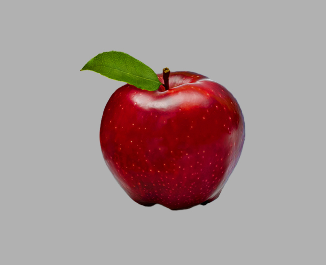

<!DOCTYPE html>
<html>
    <head>
        <title>My experiment</title>
        <script src="jspsych-6/jspsych.js"></script>
        <script src="jspsych-6/plugins/jspsych-html-keyboard-response.js"></script>
        <script src="jspsych-6/plugins/jspsych-image-keyboard-response.js"></script>
        <script src="jspsych-6/plugins/jspsych-audio-keyboard-response.js"></script>
        <script src="jspsych-6/plugins/jspsych-html-button-response.js"></script>
        <script src="jspsych-6/plugins/jspsych-audio-button-response-flexiblelocations.js"></script>
        <script src="jspsych-6/plugins/jspsych-fullscreen.js"></script>

        <link href="jspsych-6/css/jspsych.css" rel="stylesheet" type="text/css"></link>
    </head>
    <body></body>
    <script>
    /* create timeline */
    var timeline = [];
    var audio = ['audio/apple.wav'];
    var images = ['img/3_apple.jpg', 'img/1_ball.jpg', 'img/novel1.jpg', 'img/novel2.jpg']
    /* define welcome message trial */

    var welcome = {
        type: "html-button-response",
        stimulus: "<b>Image-Audio response test</b>",
        choices: ['Continue'],
        prompt: ""
    };
    timeline.push(welcome);
    alert('Test begins');


    //Pre-test parameters
    /* test trials */
    // var test_stimuli = [
    //   { stimulus: "img/blue.png"},
    //   { stimulus: "img/orange.png"}
    // ];
    //
    // var fixation = {
    //   type: 'html-keyboard-response',
    //   stimulus: '<div style="font-size:60px;">+</div>',
    //   choices: jsPsych.NO_KEYS,
    //   trial_duration: 1000,
    // }
    //
    // var test = {
    //   type: "image-keyboard-response",
    //   stimulus: jsPsych.timelineVariable('stimulus'),
    //   choices: ['f', 'j']
    // }
    //
    // var test_procedure = {
    //   timeline: [fixation, test],
    //   timeline_variables: test_stimuli,
    //   randomize_order: true,
    //   repetitions: 5
    // }


    // Sound Testing
    var fullscreen_trial = {
      type: 'fullscreen',
      fullscreen_mode: true
    }
    timeline.push(fullscreen_trial)

    //First Trial
    var pre_audio = {
      type: 'html-button-response',
      stimulus: 'Audio will be played in next step. Please find a quiet enviornment to avoid inturrupting others.',
      choices: ["Continue with fullscreen mode"]
    }
    timeline.push(pre_audio);


    var sound_trial_apple_1 = {
      type: 'audio-button-response-flexiblelocations',
      stimulus: 'audio/apple.wav',
      //choices: ['', ''],
      choices: ['', ''],
		    margin_top: ['250px','250px'],
		    margin_bottom: ['0px','0px'],
		    margin_left: ['0px','89px'],
		    margin_right: ['89px','0px'],

      //
      prompt:  ''
    }
    timeline.push(sound_trial_apple_1);


    //Second Trial
    var pre_audio_2 = {
      type: 'html-button-response',
      stimulus: 'Audio testing for football & cookie.',
      choices: ['Continue']
    }
    timeline.push(pre_audio);

    var sound_trial_ball_1 = {
      type: 'audio-button-response-flexiblelocations',
      stimulus: 'audio/ball.wav',
      choices: ['', ''],
        margin_top: ['250px','250px'],
        margin_bottom: ['0px','0px'],
        margin_left: ['0px','89px'],
        margin_right: ['89px','0px'],
      prompt:   ''
    }
    timeline.push(sound_trial_ball_1);


    //Third Trial
    var pre_audio_3 = {
      type: 'html-button-response',
      stimulus: 'Audio testing for logas.',
      choices: ['Continue']
    }

    var sound_trial_loga_1 = {
      type: 'audio-button-response-flexiblelocations',
      stimulus: 'audio/loga.wav',
      choices: ['', ''],
        margin_top: ['250px','250px'],
        margin_bottom: ['0px','0px'],
        margin_left: ['0px','89px'],
        margin_right: ['89px','0px'],
      prompt:   ""
    }
    timeline.push(sound_trial_loga_1)


    //Statistics
    var debrief_block = {
       type: "html-button-response",
       stimulus: function() {
         var trials = jsPsych.data.get().filter({test_part: 'test'});
         var correct_trials = trials.filter({correct: true});
         var accuracy = Math.round(correct_trials.count() / trials.count() * 100);
         var rt = Math.round(correct_trials.select('rt').mean());
         return "<p>You responded correctly on "+accuracy+"% of the trials.</p>"+
         "<p>Your average response time was "+rt+"ms.</p>"+
         "<p>Press any key to complete the experiment. Thank you!</p>";
       },
       choices: ['Continue'],
       prompt: ""
     };
     timeline.push(debrief_block);

    //End testing
    var test_end = {
        type: "html-button-response",
        stimulus: "<b>The test is finished. Press any key to quit</b>",
        choices: ['End Test'],
        prompt: ""
    };
    timeline.push(test_end);

    var fullscreen_trial_exit = {
      type: 'fullscreen',
      fullscreen_mode: false
    }
    timeline.push(fullscreen_trial_exit)
    /* start the experiment */
    jsPsych.init({
      // preload_audio: audio,
      // preload_images: images,
      //timeline: timeline,
      preload_audio: audio,
      preload_images: images,
      //timeline: timeline
      timeline: [welcome, fullscreen_trial, pre_audio, sound_trial_apple_1, pre_audio_2, sound_trial_ball_1, pre_audio_3, sound_trial_loga_1, debrief_block, test_end],
      on_finish: function() {
        jsPsych.data.displayData();
      }
      // show_preload_progress_bar: false // hide preload progress bar
    });
    </script>

</html>
